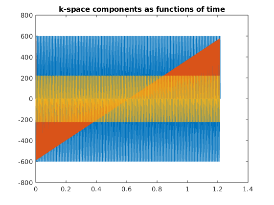
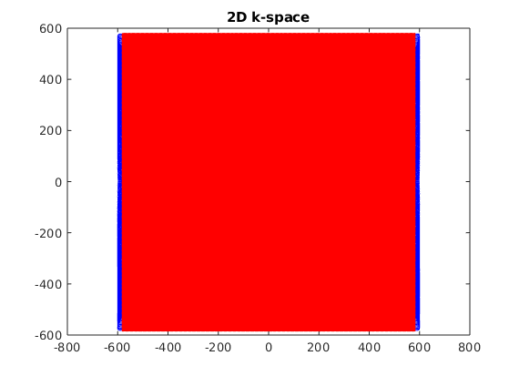

Contents
seq=mr.Sequence();
fov=220e-3; Nx=128; Ny=128;
sys = mr.opts('MaxGrad',36,'GradUnit','mT/m',...
'MaxSlew',140,'SlewUnit','T/m/s',...
'rfRingdownTime', 20e-6, 'rfDeadTime', 100e-6, ...
'adcDeadTime', 20e-6);
adc_dur=2560;
alpha=40;
thick=4;
rf_dur=600;
rf_apo=0.5;
rf_bwt=1.5;
[rf, gz, gzReph] = mr.makeSincPulse(alpha*pi/180,'Duration',rf_dur*1e-6,...
'SliceThickness',thick*1e-3,'apodization',rf_apo,'timeBwProduct',rf_bwt,'system',sys);
deltak=1/fov;
gx = mr.makeTrapezoid('x','FlatArea',Nx*deltak,'FlatTime',adc_dur*1e-6,'system',sys);
adc = mr.makeAdc(Nx,'Duration',gx.flatTime,'Delay',gx.riseTime,'system',sys);
gxPre = mr.makeTrapezoid('x','Area',-gx.area/2,'system',sys);
phaseAreas = ((0:Ny-1)-Ny/2)*deltak;
gz_parts=mr.splitGradientAt(gz,rf.delay+rf.t(end));
gz_parts(1).delay=mr.calcDuration(gzReph);
gz_1=mr.addGradients({gzReph,gz_parts(1)},'system',sys);
[rf]=mr.align('right',rf,gz_1);
gz_parts(2).delay=0;
gzReph.delay=mr.calcDuration(gz_parts(2));
gz_2=mr.addGradients({gz_parts(2),gzReph},'system',sys);
gx_parts=mr.splitGradientAt(gx,ceil((adc.dwell*adc.numSamples+adc.delay+adc.deadTime)/sys.gradRasterTime)*sys.gradRasterTime);
gx_parts(1).delay=mr.calcDuration(gxPre);
gx_1=mr.addGradients({gxPre,gx_parts(1)},'system',sys);
adc.delay=adc.delay+mr.calcDuration(gxPre);
gx_parts(2).delay=0;
gxPre.delay=mr.calcDuration(gx_parts(2));
gx_2=mr.addGradients({gx_parts(2),gxPre},'system',sys);
gxPre.delay=0;
pe_dur=mr.calcDuration(gx_2);
gz_1.delay=max(mr.calcDuration(gx_2)-rf.delay,0);
rf.delay=rf.delay+gz_1.delay;
TR=mr.calcDuration(gz_1)+mr.calcDuration(gx_1);
TE=TR/2;
rf05=rf;
rf05.signal=0.5*rf.signal;
seq.addBlock(rf05,gz_1);
seq.addBlock(gz_2);
prepDelay=mr.makeDelay(round((TR/2-mr.calcDuration(gz_1)-mr.calcDuration(gz_2))/sys.gradRasterTime)*sys.gradRasterTime);
seq.addBlock(prepDelay);
for i=1:Ny
rf.phaseOffset=pi*mod(i,2);
adc.phaseOffset=pi*mod(i,2);
gyPre_2 = mr.makeTrapezoid('y','Area',phaseAreas(i),'Duration',pe_dur,'system',sys);
if i>1
gyPre_1 = mr.makeTrapezoid('y','Area',-phaseAreas(mod(i+Ny-2,Ny)+1),'Duration',pe_dur,'system',sys);
seq.addBlock(rf,gz_1, gyPre_1, gx_2);
else
seq.addBlock(rf,gz_1);
end
seq.addBlock(gx_1,gyPre_2, gz_2,adc);
end
seq.addBlock(gx_2);
assert(TR==(mr.calcDuration(seq.getBlock(4))+mr.calcDuration(seq.getBlock(5))));
fprintf('Sequence ready\n');
fprintf('TR=%f ms TE=%f ms\n', TR*1e3, TE*1e3);
Sequence ready
TR=4.210000 ms TE=2.105000 ms
check whether the timing of the sequence is correct
[ok, error_report]=seq.checkTiming;
if (ok)
fprintf('Timing check passed successfully\n');
else
fprintf('Timing check failed! Error listing follows:\n');
fprintf([error_report{:}]);
fprintf('\n');
end
Timing check passed successfully
prepare export
seq.setDefinition('FOV', [fov fov thick*1e-3]);
seq.setDefinition('Name', 'trufi');
seq.write('trufi.seq')
plots and displays
seq.plot();
gw=seq.gradient_waveforms();
figure; plot(gw');


new single-function call for trajectory calculation -- relatively slow but very helpful
[ktraj_adc, ktraj, t_excitation, t_refocusing] = seq.calculateKspace();
figure; plot(ktraj');
figure; plot(ktraj(1,:),ktraj(2,:),'b',...
ktraj_adc(1,:),ktraj_adc(2,:),'r.');
 
very optional slow step, but useful for testing during development e.g. for the real TE, TR or for staying within slewrate limits
rep = seq.testReport;
fprintf([rep{:}]);
Number of blocks: 260
Number of events:
RF: 129
Gx: 256
Gy: 255
Gz: 258
ADC: 128
Delay: 1
Sequence duration: 0.541460s
TE: 0.002110s
TR: 0.004210s
Flip angle: 20.00°
Flip angle: 40.00°
Unique k-space positions (a.k.a. columns, rows, etc): 128
Unique k-space positions (a.k.a. columns, rows, etc): 128
Dimensions: 2
Spatial resolution: 1.73 mm
Spatial resolution: 1.72 mm
Repetitions/slices/contrasts: 1 range: [1 1]
Cartesian encoding trajectory detected
Block timing check passed successfully
Max. Gradient: 1256659 Hz/m == 29.52 mT/m
Max. Gradient: 881543 Hz/m == 20.71 mT/m
Max. Gradient: 1081641 Hz/m == 25.40 mT/m
Max. Slew Rate: 5.68182e+09 Hz/m/s == 133.45 T/m/s
Max. Slew Rate: 5.95701e+09 Hz/m/s == 139.91 T/m/s
Max. Slew Rate: 5.68183e+09 Hz/m/s == 133.45 T/m/s
Max. Absolute Gradient: 1759405 Hz/m == 41.32 mT/m
Max. Absolute Slew Rate: 9.94802e+09 Hz/m/s == 233.65 T/m/s